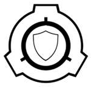

|  | Our armed forces are there to respond to every situation that requires force. From securing our facilities, handing our less than desirable, but still required, staff, and containing threats in the field. Both paranormal and everyday ugly situations. |
| Our research staff are hard at work discovering everything there is to know about the monsters we keep under the cover. This also includes our medical staff, who work around the clock providing medical care to every single facility, making sure our armed forces, and civil staff are all operational and healthy, to conduct their duties to their best abilities. |